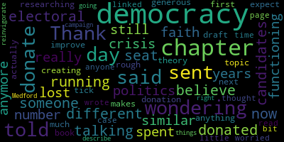

[Callahan]: So the other day, I was talking to someone who had donated to me and some other candidates in 2020 when I was running for a different seat. But now he said that he doesn't believe in electoral politics anymore. He had lost faith in our democracy. And I told him that in 2016, I had a similar crisis where I was really wondering if our democracy was still functioning. And I've spent a number of years researching what makes democracy tick, creating my own theory about how we can improve it. So I told him that I had a rough draft of a book on this topic and I sent him the first chapter. I didn't expect anything because he said he wouldn't donate. And the next day he actually sent me a very generous donation. Thank you so much for that. But I thought in case anyone else out there is worried about our democracy and wondering what you can do. and also have time to read a 20 page chapter that I wrote. It is linked down below. And if you can donate a little bit to my campaign, because I am going to be doing all of the things that I describe in the chapter to reinvigorate our democracy right here in Medford. Thank you.
|
total time: 1.15 minutes total words: 219  |
|||
{kind=link}